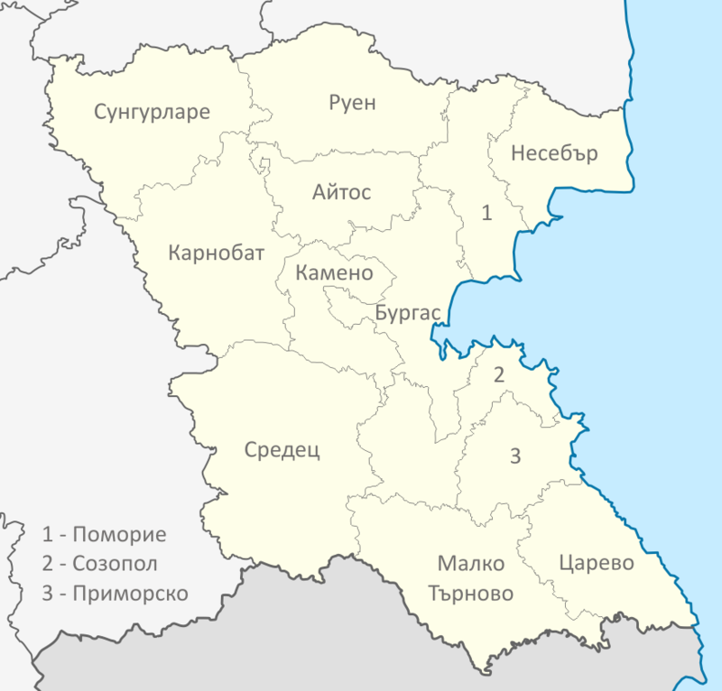

Бургарска област
Традиции и обичаи в Бургарска област
- Бургас
- Бургас е най-големият град в Югоизточна България и вторият по големина на българското Черноморие, а със своето землище от 253,644 km², той е вторият град по площ в България (след София). Бургас е най-важният културен, стопански, транспортен, управленски, туристически и просветен център в Югоизточна България. Градът е административно средище на едноименната община и област, както и седалище на регионални и национални институции.
- Карнобат
- Карнобат е град в Югоизточна България. Той се намира в област Бургас и е разположен на еднакво отстояние от Бургас, Сливен и Ямбол. Градът е административен център на община Карнобат. Там се намира Институтът по земеделие. Към декември 2004 г. градът е на 47-о място по население в България и на трето в област Бургас, след Бургас и Айтос. По данни на НСИ към 31 декември 2019 г. жителите на града са 16 971, което го прави петото по големина населено място в Област Бургас.
- Несебър
- Несебър е град, разположен в Югоизточна България. Той се намира в община Несебър, област Бургас, в съседство на север с най-голямото българско черноморско летовище Слънчев бряг. Градът е административно средище на община Несебър и е един от най-древните градове в Европа, възникнал преди повече от 3200 години. Разстоянието до Бургас е 34 км. По данни на НСИ към 31 декември 2019 г. населението е 20 120 души, което го нарежда на второ място по големина в Област Бургас.
- Айтос
- Айтос е град в област Бургас, Югоизточна България. Той е административен и стопански център на едноименната община Айтос, намира се на около 28 km разстояние от областния център Бургас. По данни на НСИ населението на града към 31 декември 2019 г. е 19 135 жители, което го прави третото по големина населено място в областта след Бургас.
